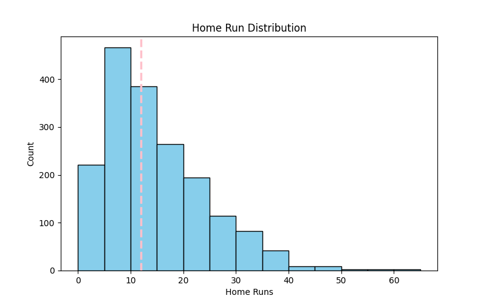

Detroit Tigers Home Run Predictor
The 2025 Detroit Tigers demonstrated the potential of a young club by finishing with the 11th most home runs in franchise history and making it to the American League Divisional Series. In order to forecast each player's home run totals for the 2026 season, this project creates a machine learning model. Along with more advanced analytics like bat speed, launch angle, and exit velocity, the model also includes conventional statistics like home runs, batting average, and plate appearances. Predictions for 13 qualifying players on the 2026 roster were produced using these features, showing the value of integrating traditional and advanced analytics for player forecasting and offering insights into possible offensive performance.
More details
Problem
With the 11th-highest home run total in team history and a trip to the American League Divisional Series, the 2025 Detroit Tigers had an incredible season. The performance demonstrated the skill and potential of one of the league's youngest rosters, even though the team did not win the World Series. Accurately estimating individual contributions can assist in predicting team success and guide strategic choices, as many of the same players will be back in 2026.
Approach
The goal of this research is to apply machine learning to forecast the Detroit Tigers' home run totals in 2026. The dataset I used came from the MLB’s Baseball Savant website that contains a wide variety of every individual player’s batting analytics. The model I built combines advanced analytics like bat speed, launch angle, and exit velocity with conventional hitting statistics like home runs, batting averages, and plate appearances. The algorithm attempts to generate more precise predictions of individual offensive production by fusing player-specific metrics with previous performance data. Thirteen qualifying players on the 2026 roster were predicted, providing information about the team's possible performance and demonstrating the importance of data-driven methods in sports analytics.
Results & Impact
The model performed fairly well when predicting the home runs for the validation set. In its best run, the model only incurred about an 85 mean squared error across 36 samples. However, the model failed to predict any single digit home run totals for anyone, leading to a very biased model. Since the project is predicting the upcoming home runs totals for the Detroit Tigers, there is not an accurate way to measure the quality of the model in terms of the testing data. But from the perspective of a fan who has been following the Detroit Tigers for the past decade, I would conclude that these predictions are optimistic, but overall reasonable.